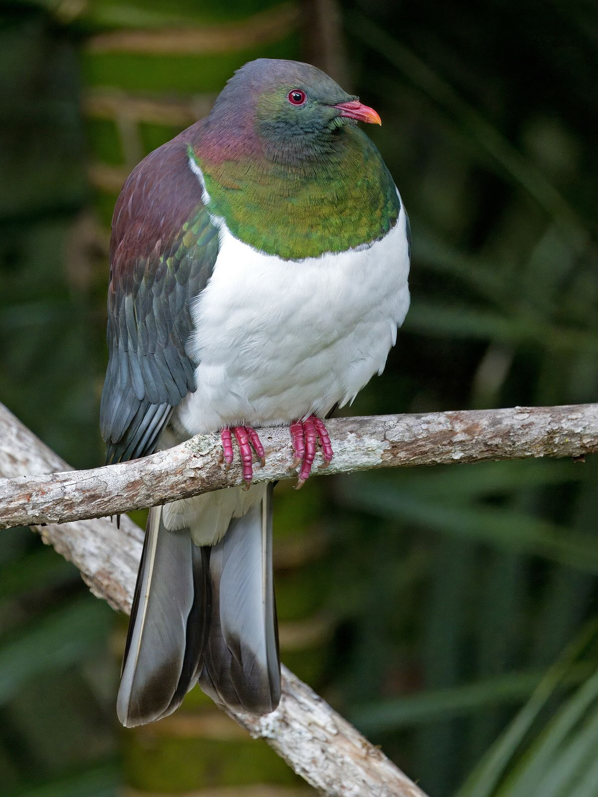
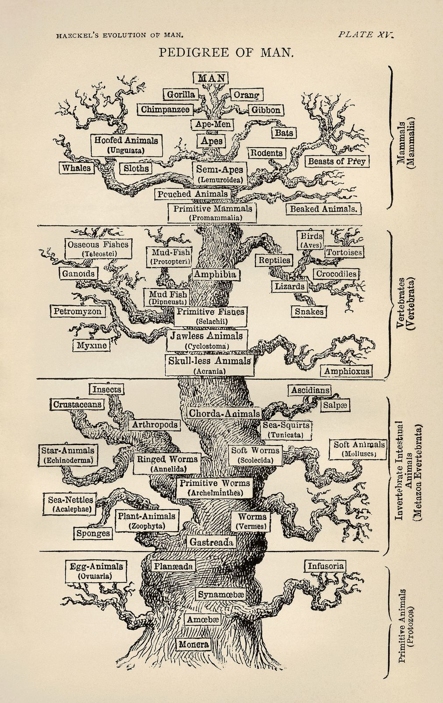
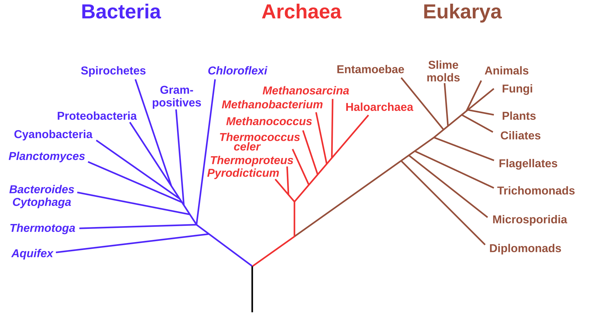

Year 9 Science · Lesson 4
Building our tree of life
Finish your poster, find your relatives, and join them all into one tree.

_Waitakere.jpg){kind=link}
Today
The plan
- Finish your poster. 20 minutes.
- Find your group. Stand with the animals that share your key features.
- Build the tree. Join every poster into one tree on the wall.
- Generalise. What does the tree tell us?
20 minutes
Finish your poster
- Name and picture of your animal
- Its animal group, and the features that put it there
- One structural, one behavioural and one physiological adaptation, each explained
- A close relative on the Evogeneao tree, and how long ago they shared a common ancestor
- Your sources
Write the common ancestor date large on your poster. We need it to place you on the wall.
Get moving
Find your group
Hold up your poster. Stand with the animals that share your key features: mammals, birds, reptiles, amphibians, fish, insects, everything else.
- Is any animal hard to place? What feature settles it?
- Which group has the most members? Is that true of all animals on Earth?
Now, inside your group: who is most closely related to whom? Use your common ancestor dates.
Evogeneao
How long ago did we share an ancestor?
| Humans and… | Last common ancestor, about |
|---|---|
| Kekeno (fur seal) | 95 million years ago |
| Tūī | 320 million years ago |
| Tuatara | 320 million years ago |
| Pepeketua (frog) | 350 million years ago |
| Tāmure (snapper) | 430 million years ago |
| Wētā | more than 550 million years ago |
Why do the tūī and the tuatara have the same date? Their branch split from ours before it split into birds and reptiles.
Dates are rounded estimates from TimeTree. Evogeneao's numbers may differ a little.
Class task
Build the tree on the wall
- The trunk is the common ancestor of all animals.
- Each group gets its own branch.
- Posters go at the tips of the branches.
- Where two branches meet, write the common ancestor date.
Rule: animals with a more recent common ancestor go on branches that join closer to the tips. Older splits join closer to the trunk.
Evogeneao videos: watch how the tree of life works before you start.
You're not the first
Ernst Haeckel drew this tree in 1879
He used body features like the ones on your posters to decide where each animal belonged.
Today scientists also compare DNA. When DNA and body features point to the same tree, that is strong evidence it is right.
Haeckel put humans at the very top. Modern trees don't: every living species is at a tip, the same distance from the trunk.


Zoom out
Where is our wall on the whole tree of life?

Find Animals, top right. Every poster on our wall sits on that one small branch.
Eric Gaba, after NASA Astrobiology Institute. Public domain

Generalise
What does our tree tell us?
- How many species are there?
- What are the main groups?
- What features must you have to fit in each group?
Big idea: living things can be grouped into smaller groups of related organisms based on their characteristics.
Exit question
Write your own generalisation
One sentence about how living things are grouped, and why. Use your own words, not the big idea on the last slide.
Stuck? Start with "Animals that share…"
Just for fun
Which chonky animal are you?
A BBC Earth quiz. Skip to the results at the end; you don't need to sign up or give an email.
Whichever animal you get: which group is it in, and which key feature proves it?
Away today?
Missed this lesson? Catch up here
- Finish your poster at home using the checklist on slide 3, and hand it in next lesson.
- Look at the class tree on the wall and find where your animal fits.
- Copy the table on slide 5 into your book. Explain why the tūī and tuatara share a date.
- Exit question: write your own generalisation about how living things are grouped.